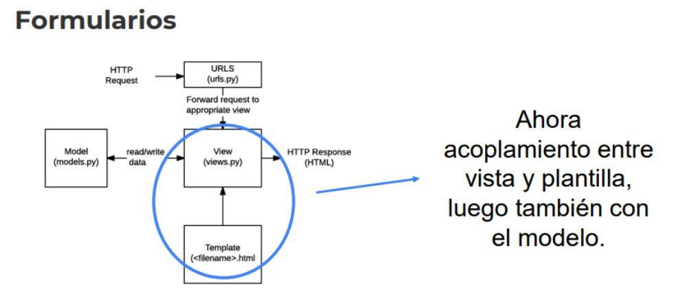
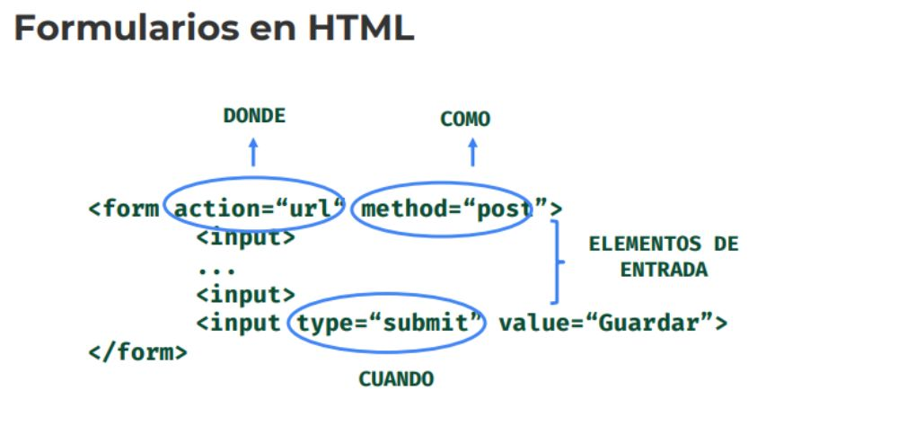
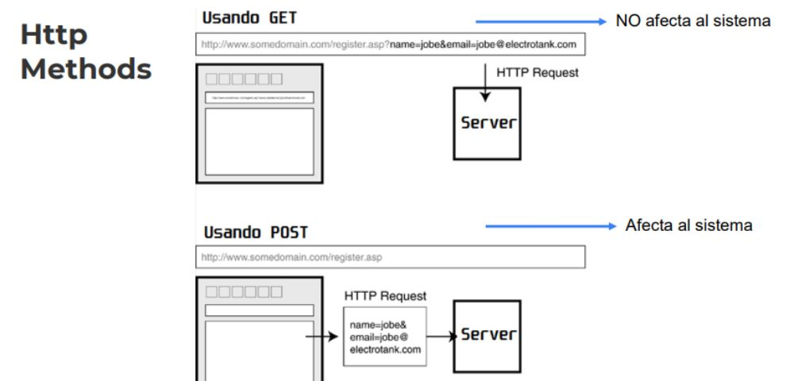
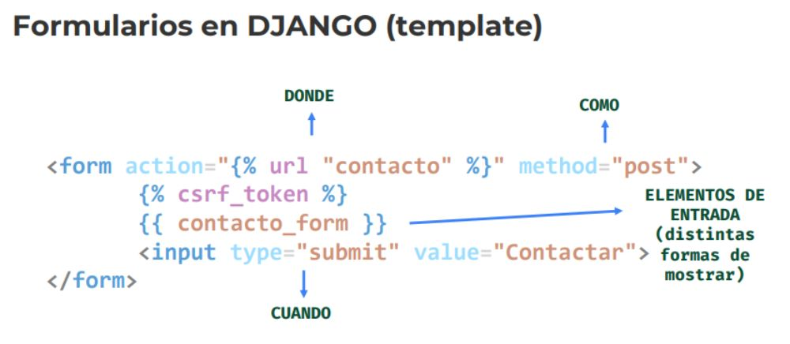
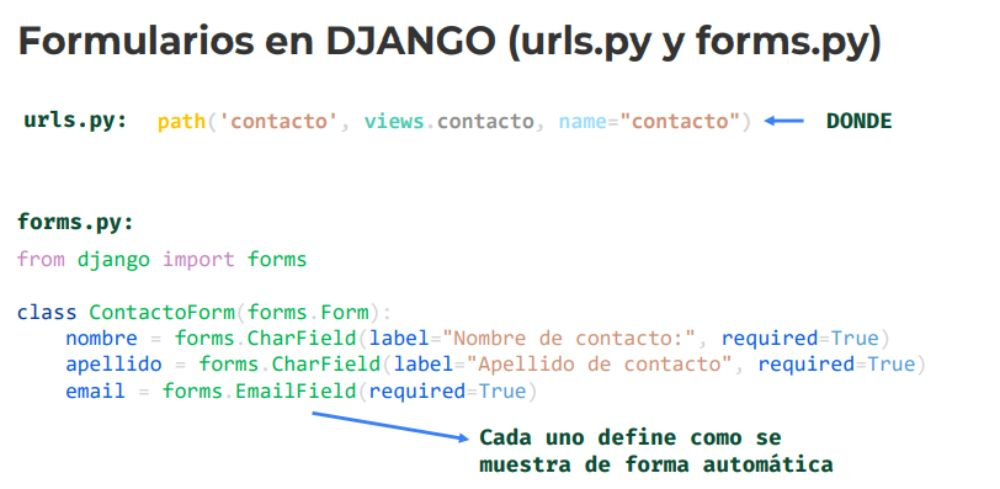
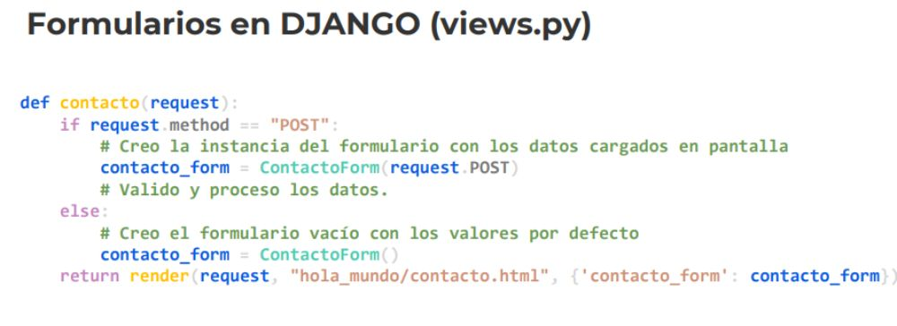
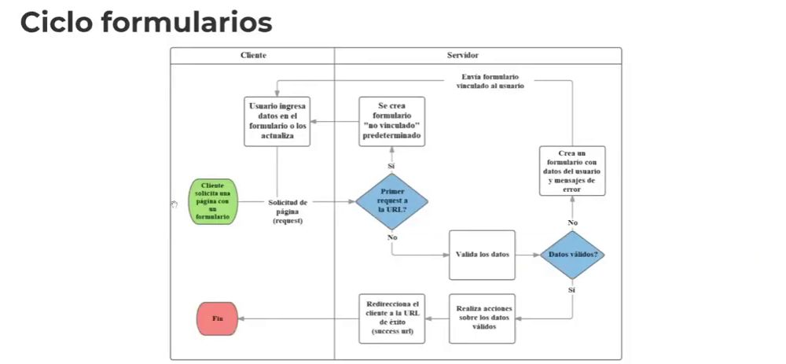

Desarrollo Django
1. Formularios

Ahora tendremos el acoplamiento entre vista y plantilla..
- Luego también con el modelo
Las vistas, son las funciones de python, las clases..
El formulario lo dibujamos de acuerdo a lo que sugiere django.
2. Formularios en HTML

* Donde -> Que backend va a recibir los datos, el hacia donde van los datos.
* Como -> El método que se utilizará
Donde como
< form action=“url“ method=“post”>
< input>
... -> Lo que vaya dentro de los inputs, será lo que se guardará.
- Cargan los datos, interactuamos con el usuario.
< input>
< input type=“submit” value=“Guardar”>
cuando
< /form>
3. Http Methods

El uso de los verbos, dependerá de lo que deseemos realizar.
Usando GET -> No afecta al sistema. -> Los datos se ven en la url
Usando Post -> Afecta al Sistema -> No
4. Formularios en DJANGO (template)

*Donde: Le ponemos la url de nuestro backend
donde como
< form action="{% url "contacto" %}" method="post">
{% csrf_token %} -> Le agregamos la seguridad, para evitar el cross site
{{ contacto_form }} -> Elementos de entrada, distintas formas de mostrar
< input type="submit" value="Contactar">
cuando
< /form>
5. Formularios en DJANGO (urls.py y forms.py)

urls.py: Apuntamos a esta url con el action a través del form..
path('contacto', views.contacto, name="contacto") DONDE
forms.py: Armamos nuestro formulario de acuerdo a lo necesario..
from django import forms
class ContactoForm(forms.Form):
nombre = forms.CharField(label="Nombre de contacto:", required=True)
apellido = forms.CharField(label="Apellido de contacto", required=True)
email = forms.EmailField(required=True)
Cada Field -> Cada uno define como se muestra de forma automática.
- Los campos tienen sus propios comportamientos, de acuerdo a lo que necesitemos.
6. Formularios en DJANGO (views.py)

def contacto(request): -> Definimos la vista.
if request.method == "POST":
# Creo la instancia del formulario con los datos cargados en pantalla
contacto_form = ContactoForm(request.POST)
# Valido y proceso los datos.
else:
# Creo el formulario vacío con los valores por defecto
contacto_form = ContactoForm()
return render(request, "hola_mundo/contacto.html", {'contacto_form': contacto_form})
7. Ciclo formularios

Dependerá el formulario si viene vinculado o no..
----------------------- Ejemplo práctico..
En la urls.py tendremos la url de nuestro contacto..
urlpatterns = [
path('', views.index, name="index"),
path('lenguajes', views.lenguajes, name="pepe"),
path('contacto', views.contacto, name="contacto") -> Registramos la url
]
Armamos la plantilla de nuestro contacto.. Eligiendo de que manera mostrar los inputs.
< form action="{% url "contacto" %}" method="post">
{% csrf_token %}
{% comment %}
{{ contacto_form }} -> Formulario normal
{% endcomment %}
{% comment %}
< table>
{{ contacto_form.as_table }} -> Como tabla
< /table>
{% endcomment %}
{% comment %}
< ul>
{{ contacto_form.as_ul }} -> Como una lista desordenada
< /ul>
{% endcomment %}
{{ contacto_form.as_p}} -> Como texto.
< input type="submit" value="Contactar">
< /form>
Ahora en nuestra views.py.. Armamos la función para nuestra vista..
from .forms import ContactoForm
def contacto(request):
if request.method == "POST":
# Creao la instancia populada con los datos cargados en pantalla
contacto_form = ContactoForm(request.POST) -> El request será en la data proporcionada en el formulario, si el método es POST.
# Valido y proceso los datos.
contacto_form.is_valid()
else:
# Creo el formulario vacío con los valores por defecto
contacto_form = ContactoForm()
return render(request, "hola_mundo/contacto.html", {'contacto_form': contacto_form})
Y creamos un archivo para nuestros forms.py
from django import forms
class ContactoForm(forms.Form): -> Con todos los campos que necesitemos.
nombre = forms.CharField(label="Contacto:", required=False, max_length=10)
apellido = forms.CharField(label="Apellido de contacto", required=False)
email = forms.EmailField()